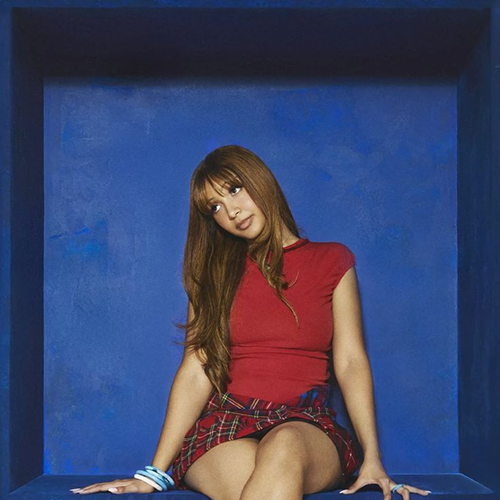
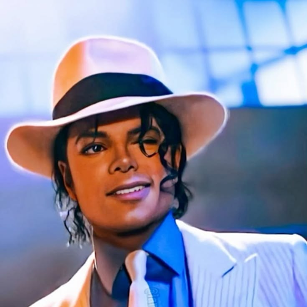

Билли Джоэл — американский певец, пианист и композитор, родившийся 9 мая 1949 года в Нью-Йорке. Известен сочетанием поп-музыки, рока и элементов джаза. Благодаря характерной манере исполнения и игре на фортепиано получил прозвище «Piano Man». Широкую известность музыканту принесла песня «Piano Man», выпущенная в 1973 году. Одним из наиболее успешных альбомов стал «The Stranger» (1977),
PinkPantheress
PinkPantheress — британская певица, автор песен и музыкальный продюсер, родившаяся в 2001 году в Англии.
Подробнее>>
Сергей Лазарев
Сергей Лазарев — российский певец и актёр, родившийся 1 апреля 1983 года в Москве.
Подробнее>>
Billy Joel
в который вошли композиции «Just the Way You Are», «Vienna» и «She's Always a Woman». За свою карьеру Билли Джоэл выпустил множество известных песен, среди которых «Uptown Girl», «We Didn't Start the Fire» и «New York State of Mind». Его творчество оказало значительное влияние на поп- и рок-музыку, а сам исполнитель стал одним из наиболее узнаваемых американских музыкантов своего поколения.
Подробнее>>
Музыка разных жанров
У каждого исполнителя свой стиль: поп-музыка, рок или электронное звучание. На сайте собраны музыканты из разных стран и поколений. В общем списке можно сравнить исполнителей по жанру, стране, году начала карьеры и количеству альбомов.
Подробнее>>
Michael Jackson
Американский певец и танцор, один из наиболее известных исполнителей поп-музыки.
Подробнее>>Beabadoobee
Британская певица и автор песен, сочетающая в своём творчестве инди-рок и поп-музыку.
Подробнее>>